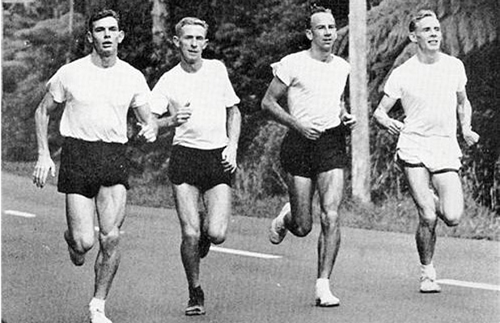

En los últimos años gente de todas las edades se ha sumado a salir a correr. Así, han aparecido tiendas, multitud de carreras en las grandes ciudades, productos de todo tipo e incluso aplicaciones móviles.
El origen del running se encuentra en los años 70 en Estados Unidos. Dos hombres tuvieron una clara responsabilidad en su nacimiento, Bill Bowerman y Phil Knight fundadores de una importante marca deportiva. El primero era, además, un prestigioso entrenador de atletismo que desarrolló su carrera en la década de los 60 en Oregón. Un viaje a Nueva Zelanda le hizo tomar contacto con un nuevo tipo de entrenamiento físico que consistía en salir a trotar todas las mañanas.
A su regreso a Estados Unidos, Bowerman organizó grupos con sus vecinos en Eugene y contrató a un médico para que supervisara este nuevo tipo de ejercicio. Juntos promovieron la práctica del jogging o running que comenzó a hacerse popular a lo largo de los setenta. Además, durante estos años no faltaron los libros sobre la materia que animaron a otros aficionados a comenzar a practicar este nuevo deporte que tenía la sencillez como bandera.
Asimismo, la medalla en maratón obtenida por el atleta estadounidense Frank Shorter en los Juegos Olímpicos de Munich de 1972 supuso un nuevo empuje a la práctica de este deporte. Poco a poco fue consolidándose como una seña de identidad de la sociedad de EEUU que gracias a su implacable marketing fue exportado con rapidez. La aparición de carreras masivas para aficionados llegó a las calles de las grandes ciudades. En 1970 se celebró la primera maratón de Nueva York con apenas 127 participantes.
A las nuevas carreras deben sumarse las que ya existían en su condición de grandes maratones. La de Boston que data de 1897, la de Behobia-San Sebastián cuya primera edición fue en 1919 o la veterana Jean Bouin que se celebra desde 1920 por las calles de Barcelona.
Practicar deporte es una actividad que permite mejorar notablemente la salud pero para que consiga ese objetivo se hace necesario desarrollarlo de la manera más conveniente, lo que supone entre otras cosas, llevarlo a cabo contando con el material adecuado.
Lo más importante para realizar running es el calzado ya que los pies serán la zona que recibirán todo el impacto al correr y deben estar bien protegidos y cómodos. Para que la elección de las zapatillas sea la correcta deberás tener en cuenta el tipo de suelo sobre el que vas a correr así como también la propia forma de correr, es decir el tipo de pisada.

Foto disponible en el portal: El Cronista